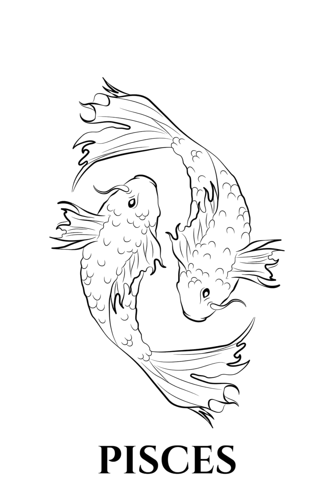

Info:
Οι Ιχθύες (♓) είναι αστρολογικό ζώδιο, το οποίο συνδέεται με τον αστερισμό των Ιχθύων. Σύμφωνα με τον τροπικό ζωδιακό, οι Ιχθύες καταλαμβάνονται από τον Ήλιο
από 19 Φεβρουαρίου μέχρι 20 Μαρτίου. Στον αστρικό ζωδιακό, ο αστερισμός καταλαμβάνεται κατά την περίοδο από 15 Μαρτίου έως 14 Απριλίου. Το ζώδιο απέναντι από τους Ιχθύες είναι ο Παρθένος.
Πιο αναλυτικά τα βασικά χαρακτηριστικά των Ιχθύων:
Ποιότητα:
Σταθερό (Επιμονή, προσήλωση στους στόχους, αντοχή)
Κυβερνήτης Πλανήτης:
Πλούτωνας (Συμβολίζει τη μεταμόρφωση, το πάθος, τη δράση και τη δύναμη)
Αντίθετο Ζώδιο:
Ταύρος
Θετικά:
Αποφασιστικότητα , Αφοσίωση , Πίστη
Αρνητικά:
Ζήλια , Εκδικητικότητα , Μυστικοπάθεια

Χαρακτηριστικά & Προσωπικότητα των Ιχθύων
Οι Ιχθύες είναι ένα ζώδιο που ξεχωρίζει για την ευαισθησία, τη φαντασία και τη βαθιά συναισθηματική του φύση. Από τα βασικά χαρακτηριστικά τους είναι η ενσυναίσθηση, η καλοσύνη και η ικανότητά τους να καταλαβαίνουν τους άλλους σε βαθύ επίπεδο. Είναι άνθρωποι που συχνά λειτουργούν με το συναίσθημα και όχι με τη λογική, κάτι που τους κάνει ιδιαίτερα τρυφερούς αλλά και ευάλωτους.
Το ζώδιο αυτό ανήκει στο στοιχείο του νερού, κάτι που επηρεάζει έντονα την ψυχολογία, τα συναισθήματα και τη διαίσθησή τους. Οι Ιχθύες είναι ονειροπόλοι, δημιουργικοί και συχνά ζουν μέσα στον δικό τους εσωτερικό κόσμο, γεμάτο φαντασία και συναισθηματικές εικόνες.
Η προσωπικότητα των Ιχθύων χαρακτηρίζεται από ευαισθησία, καλοσύνη και έντονη διαίσθηση. Είναι άνθρωποι που καταλαβαίνουν εύκολα τη διάθεση των άλλων και συχνά προσπαθούν να βοηθήσουν, ακόμη και εις βάρος του εαυτού τους. Παρόλο που μπορεί να φαίνονται ήρεμοι, μέσα τους έχουν ένα βαθύ συναισθηματικό κόσμο που επηρεάζει τις αποφάσεις τους.
Στην προσωπικότητά τους κυριαρχεί η ανάγκη για αγάπη, αποδοχή και συναισθηματική ασφάλεια. Προτιμούν σχέσεις που τους προσφέρουν τρυφερότητα και κατανόηση, αποφεύγοντας εντάσεις και σκληρές συμπεριφορές.
Καριέρα & Στοιχείο Ιχθύων
Στην καριέρα, οι Ιχθύες αποδίδουν καλύτερα σε επαγγέλματα που απαιτούν δημιουργικότητα, φαντασία και συναισθηματική νοημοσύνη. Μπορούν να διακριθούν σε τομείς όπως η τέχνη, η μουσική, ο κινηματογράφος, η ψυχολογία, η θεραπευτική προσέγγιση και γενικά σε επαγγέλματα που σχετίζονται με την προσφορά και την κατανόηση ανθρώπων.
Η ευαισθησία τους τούς βοηθά να εμπνέονται εύκολα, αλλά κάποιες φορές μπορεί να δυσκολεύονται να παραμείνουν συγκεντρωμένοι σε πρακτικά ζητήματα ή αυστηρά δομημένα περιβάλλοντα.
Οι Ιχθύες ανήκουν στο στοιχείο του νερού, το οποίο σχετίζεται με το συναίσθημα, τη διαίσθηση και τη βαθιά ψυχική σύνδεση με τους άλλους. Αυτό το στοιχείο τους κάνει ιδιαίτερα συμπονετικούς και ικανούς να αντιλαμβάνονται πράγματα που δεν λέγονται με λόγια. Η ευαισθησία τους είναι η μεγαλύτερη δύναμη αλλά και η μεγαλύτερη πρόκλησή τους.
Συμβατότητα & Σχέσεις Ιχθύων
Όσον αφορά τη συμβατότητα, οι Ιχθύες ταιριάζουν ιδιαίτερα με ζώδια του νερού, όπως ο Καρκίνος και ο Σκορπιός, καθώς μοιράζονται βαθιά συναισθηματική κατανόηση και έντονη διαίσθηση. Επίσης, έχουν πολύ καλή χημεία με ζώδια της γης, όπως ο Ταύρος και ο Αιγόκερως, τα οποία τους προσφέρουν σταθερότητα και ασφάλεια.
Οι σχέσεις των Ιχθύων βασίζονται στο συναίσθημα, την τρυφερότητα και τη βαθιά σύνδεση. Δεν τους ενδιαφέρουν οι επιφανειακές σχέσεις και αναζητούν έναν σύντροφο που θα τους καταλαβαίνει πραγματικά. Δίνουν πολλά σε μια σχέση και συχνά αγαπούν χωρίς όρια, κάτι που τους κάνει πολύ αφοσιωμένους αλλά και ευάλωτους.
Στον έρωτα είναι ρομαντικοί, ευαίσθητοι και δοτικοί. Για να κερδίσει κανείς έναν Ιχθύ, χρειάζεται κατανόηση, τρυφερότητα και συναισθηματική ειλικρίνεια. Εκτιμούν βαθιά τις σχέσεις που βασίζονται στην εμπιστοσύνη και στη συναισθηματική ασφάλεια.
Συχνές Ερωτήσεις για τους Ιχθύες (FAQ)
❓ Ποια είναι τα βασικά χαρακτηριστικά των Ιχθύων;
Οι Ιχθύες θεωρούνται ένα από τα πιο ευαίσθητα, διαισθητικά και ονειροπόλα ζώδια του ζωδιακού κύκλου. Ανήκουν στο στοιχείο του Νερού, γεγονός που τους προσδίδει έντονη συναισθηματική νοημοσύνη, βαθιά ενσυναίσθηση και μεγάλη κατανόηση προς τους άλλους ανθρώπους. Συχνά χαρακτηρίζονται από καλοσύνη, ευγένεια και μια φυσική τάση να βοηθούν όσους βρίσκονται γύρω τους. Έχουν έντονη φαντασία και δημιουργικότητα, κάτι που τους κάνει να ξεχωρίζουν σε καλλιτεχνικές ή εκφραστικές δραστηριότητες. Οι Ιχθύες διαθέτουν επίσης ισχυρή διαίσθηση και μπορούν να “αισθανθούν” καταστάσεις ή συναισθήματα χωρίς να χρειάζονται πολλές εξηγήσεις. Παρότι συχνά ζουν μέσα στον συναισθηματικό και φαντασιακό τους κόσμο, αυτό τους δίνει έμπνευση, αλλά μερικές φορές τους κάνει πιο ευάλωτους ή ευαίσθητους στην πραγματικότητα.
❓ Είναι οι Ιχθύες καλοί στα οικονομικά;
Οι Ιχθύες δεν θεωρούνται συνήθως το πιο πρακτικό ζώδιο στη διαχείριση των οικονομικών, καθώς συχνά λειτουργούν με βάση το συναίσθημα και τη διαίσθηση. Μπορεί να είναι γενναιόδωροι και να δίνουν προτεραιότητα στις ανάγκες των άλλων, ακόμη και εις βάρος της δικής τους οικονομικής σταθερότητας. Επίσης, έχουν τάση να ξοδεύουν χρήματα για όνειρα, εμπειρίες ή δημιουργικά ενδιαφέροντα που τους εμπνέουν. Ωστόσο, διαθέτουν προσαρμοστικότητα και μπορούν να βελτιώσουν σημαντικά τη διαχείρισή τους όταν έχουν καθοδήγηση ή σταθερό πλαίσιο. Όταν μάθουν να οργανώνουν καλύτερα τα οικονομικά τους, μπορούν να δημιουργήσουν ισορροπία ανάμεσα στη φαντασία και την πρακτικότητα, αξιοποιώντας τη διαίσθησή τους για να λαμβάνουν πιο σωστές αποφάσεις.
❓ Είναι οι Ιχθύες υπερβολικά ευαίσθητοι και ρομαντικοί στις σχέσεις;
Οι Ιχθύες είναι από τα πιο ρομαντικά και συναισθηματικά ζώδια του ζωδιακού κύκλου. Αγαπούν βαθιά και έχουν την τάση να συνδέονται έντονα με τον σύντροφό τους, συχνά εξιδανικεύοντας τις σχέσεις και βλέποντας το καλύτερο στους άλλους. Η ευαισθησία τους τούς κάνει ιδιαίτερα δεκτικούς στις συναισθηματικές αλλαγές του συντρόφου τους, γεγονός που μπορεί να τους επηρεάσει έντονα. Παρόλα αυτά, όταν νιώθουν ασφάλεια και αμοιβαία αγάπη, γίνονται εξαιρετικά τρυφεροί, δοτικοί και πιστοί. Προσφέρουν συναισθηματική στήριξη και κατανόηση και προσπαθούν πάντα να κρατούν την αρμονία στη σχέση. Η ρομαντική τους φύση και η ανάγκη τους για βαθιά συναισθηματική σύνδεση αποτελούν βασικά στοιχεία της ερωτικής τους συμπεριφοράς.
❓ Γιατί οι Ιχθύες ζουν συχνά στον δικό τους κόσμο;
Οι Ιχθύες διαθέτουν ιδιαίτερα έντονη φαντασία και πλούσιο εσωτερικό κόσμο, γεγονός που συχνά τους κάνει να φαίνονται απορροφημένοι στις σκέψεις τους ή “χαμένοι” στην ονειροπόληση. Ο εσωτερικός τους κόσμος είναι γεμάτος εικόνες, συναισθήματα και ιδέες, κάτι που τους επιτρέπει να δημιουργούν και να εμπνέονται εύκολα. Αυτή η τάση τους βοηθά ιδιαίτερα σε καλλιτεχνικές ή δημιουργικές δραστηριότητες, καθώς μπορούν να εκφράσουν βαθιά συναισθήματα με μοναδικό τρόπο. Ωστόσο, μερικές φορές μπορεί να δυσκολεύονται να παραμείνουν πλήρως προσανατολισμένοι στην καθημερινή πραγματικότητα ή στις πρακτικές απαιτήσεις της ζωής. Η ισορροπία ανάμεσα στη φαντασία και την πραγματικότητα είναι σημαντική για να αξιοποιήσουν στο έπακρο τα χαρίσματά τους.
❓ Πώς αντιδρούν οι Ιχθύες όταν πληγωθούν συναισθηματικά;
Όταν οι Ιχθύες πληγωθούν συναισθηματικά, αντιδρούν συνήθως με έντονη εσωστρέφεια και βαθιά συναισθηματική φόρτιση. Είναι από τα ζώδια που βιώνουν τον πόνο πολύ έντονα και συχνά χρειάζονται χρόνο για να επεξεργαστούν όσα αισθάνονται. Μπορεί να απομονωθούν, να στραφούν στη φαντασία τους ή να αναζητήσουν τρόπους συναισθηματικής παρηγοριάς. Παρότι έχουν την ικανότητα να συγχωρούν εύκολα, δεν ξεχνούν πάντα τις πληγές που έχουν βιώσει, καθώς τις καταγράφουν βαθιά μέσα τους. Η ευαισθησία τους τους κάνει ευάλωτους, αλλά ταυτόχρονα τους δίνει και μεγάλη συναισθηματική κατανόηση. Με τον χρόνο και τη σωστή υποστήριξη, μπορούν να επουλώσουν τις πληγές τους και να ξαναβρούν την εσωτερική τους ισορροπία.
❓ Ποιες διάσημες προσωπικότητες ανήκουν στο ζώδιο των Ιχθύων;
Πολλές σημαντικές προσωπικότητες από τον χώρο της επιστήμης, της μουσικής, της τεχνολογίας και της ψυχαγωγίας έχουν γεννηθεί κάτω από το ζώδιο των Ιχθύων. Ανάμεσά τους βρίσκεται ο Albert Einstein, ο οποίος θεωρείται μία από τις σημαντικότερες επιστημονικές μορφές στην ιστορία. Η Rihanna έχει ξεχωρίσει παγκοσμίως για τη μουσική και την επιχειρηματική της δραστηριότητα, ενώ ο Justin Bieber αποτελεί μία από τις πιο αναγνωρίσιμες μουσικές προσωπικότητες της σύγχρονης εποχής. Επιπλέον, η Dakota Fanning και ο Steve Jobs συνδέονται με δημιουργικότητα, καινοτομία και έντονη προσωπική έκφραση. Πολλοί αστρολόγοι θεωρούν ότι χαρακτηριστικά όπως η φαντασία, η ευαισθησία, η διαίσθηση και η δημιουργικότητα αντικατοπτρίζονται έντονα στις προσωπικότητες αυτών των διάσημων Ιχθύων.
 ΚΡΙΟΣ
ΚΡΙΟΣ
 ΤΑΥΡΟΣ
ΤΑΥΡΟΣ
 ΔΙΔΥΜΟΙ
ΔΙΔΥΜΟΙ
 ΚΑΡΚΙΝΟΣ
ΚΑΡΚΙΝΟΣ
 ΛΕΩΝ
ΛΕΩΝ
 ΠΑΡΘΕΝΟΣ
ΠΑΡΘΕΝΟΣ
 ΖΥΓΟΣ
ΖΥΓΟΣ
 ΣΚΟΡΠΙΟΣ
ΣΚΟΡΠΙΟΣ
 ΤΟΞΟΤΗΣ
ΤΟΞΟΤΗΣ
 ΑΙΓΟΚΕΡΩΣ
ΑΙΓΟΚΕΡΩΣ
 ΥΔΡΟΧΟΟΣ
ΥΔΡΟΧΟΟΣ
 ΙΧΘΥΕΣ
ΑΡΙΘΜΟΛΟΓΙΑ
ΙΧΘΥΕΣ
ΑΡΙΘΜΟΛΟΓΙΑ